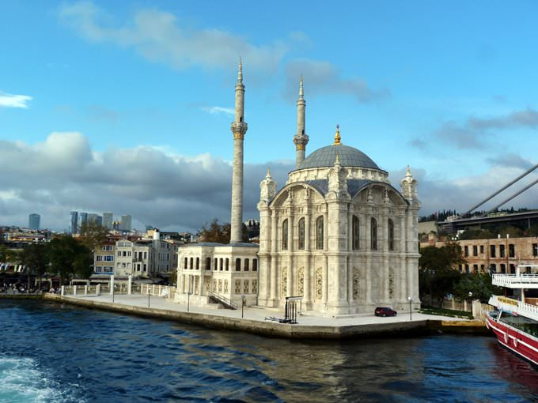

|
Розваги в Турції |
Головна |
До Турції |
Про країну |
Розваги |
Культура |
Культура Туреччини — комплекс матеріальних і духовних цінностей, а також особливостей мистецького життя Туреччини та етнографічна і соціально-побутова самобутність населення цієї країни. |
МоваСучасна турецька мова безпосередньо походить з огузо-сельджуцьких східних тюркських племен, які колись населяли Середню Азію та були витіснені в VIII—X ст. конкуруючими уйгурськими (також тюркськими) племенами на захід.Протягом останніх декількох століть турецька мова зазнала суттєвого впливу перської та арабської мов, у зв'язку з чим кількість запозичених з цих мов слів сягала часом 80 % турецької лексики. |
|
КулінаріяОсобливою популярністю як у Туреччині, так і в світі користуються турецькі солодощі та десерти. Місцеві десерти зазвичай солодкі (часто просочені медом) і часто складаються з фруктів, горіхів та печива в привабливих поєднаннях.Серед напоїв популярні чай та кава по-турецьки, а також місцеві вина. Ракія — виноградне бренді з анісовим запахом — також користується попитом. |
|
АрхітектураНа сучасну турецьку архітектуру величезний вплив зробила політика секуляризації, розпочата Кемалем Ататюрком. Якщо раніше мечеті й медресе були основними зразками національної архітектури, то з середини 1920-х років будівництво мечетей, медресе та інших культових споруд не заохочувалося державою. У зв'язку з цим різко посилився вплив сучасної світської європейської (особливо німецької) архітектури.З 1920-х років основними зразками архітектури стають офіси, музеї, готелі, урядові споруди тощо. |
 |
МузикаСучасна турецька музика розвивається під сильним впливом західної музики. Цей вплив відчувається в нових музичних жанрах, які стали особливо популярними серед молоді, в числі яких джаз, поп-музика, рок-музика, хіп-хоп тощо. Імена багатьох турецьких поп-виконавців стали відомими й поза Туреччини, частково завдяки фестивалям Євробачення. У їх числі — MaNga, Таркан, Сердар Ортач, Емре Айдин, Хадісе, Теоман, Ханде Єнер, Мустафа Сандал, Сертаб Ернер та інші. |
|
КінематографБагато з цих фільмів — результат роботи індивідуальних кінематографістів, а не кіноіндустрії в цілому, яка в останні роки стає частиною міжнародних конгломератів та все більш і більш залежить від рекламного і дистриб'юторського потенціалу таких компаній, як Warner Bros і United International Pictures. |
|
Релігія99 % населення Туреччини — мусульмани, в основному — суніти, але на сході й південному сході країни мешкають шиїти та алевіти. Багато турецьких традицій засновані на шаріаті. Ісламський етикет вимагає носити скромний одяг і знімати взуття при відвідинах мечеті. Жінкам пропонується носіння одягу, що закриває більшу частину тіла. Проте, Туреччина — в основному світська країна. |
|
Традиційний спортВерблюжа боротьба (тур. deve güreşi) - традиційний вид спорту, в якому два самця верблюдів борються, за самицю. Популярна розвага серед сільських жителів західної Туреччини. |
Головна |
До Турції |
Про країну |
Розваги |
Культура |